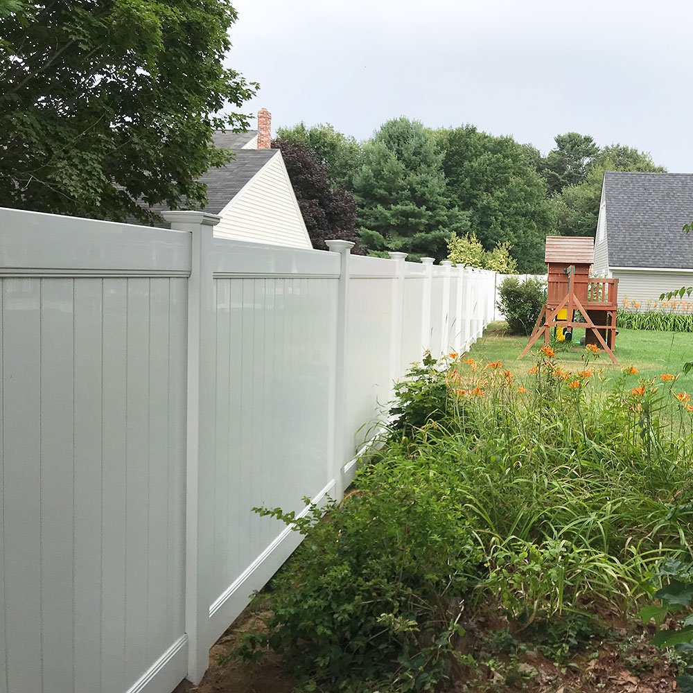
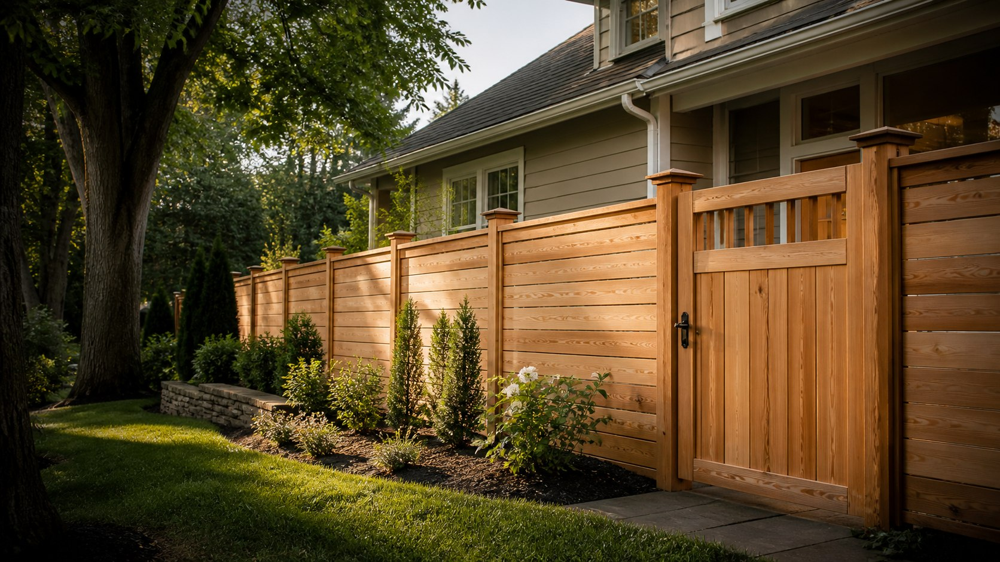
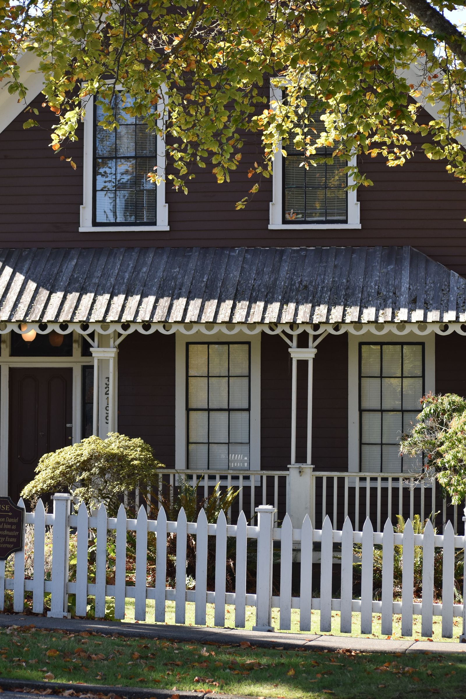

Fences
Wood, vinyl & chain link
Core materials for privacy, curb appeal and dependable boundaries.
Explore fence types →About Akron Fence Pros
We build fences that strengthen the way a property looks, feels and works.
Quality fences. Stronger homes.
It can create privacy, make room for pets and family, define an entrance, protect a property or simply make the landscape feel finished.
Akron Fence Pros approaches each project with that bigger picture in mind. Material choice, post alignment, gate placement and the small transitions at corners and grades all contribute to a fence that feels considered.
Our visual identity says it plainly: Built to Last. The goal is reliable work, clear communication and a finished result that earns its place around the home.

How we work
A polished fence begins with practical decisions and ends with clean workmanship.
Our focus
These are the service categories represented in the Akron Fence Pros identity and carried consistently through the redesigned site.

Core materials for privacy, curb appeal and dependable boundaries.
Explore fence types →
Let’s talk
We’ll start with your goals, preferred material and the way the space needs to work.
(330) 555-0188info@akronfencepros.comAkron, Ohio